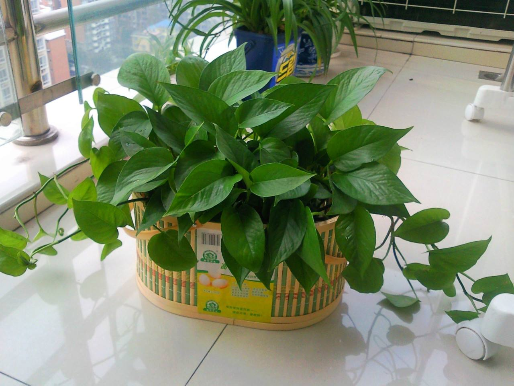
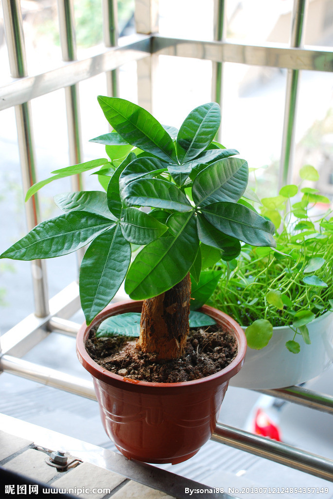
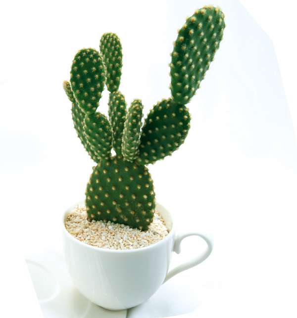
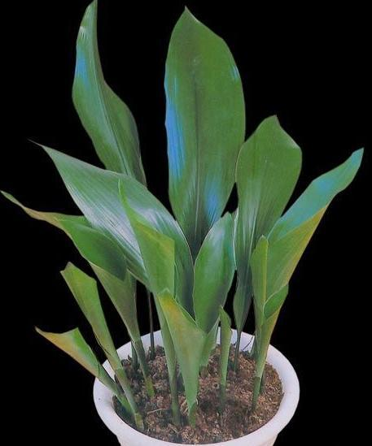

|  | 绿萝于麒麟叶属植物，大型常绿藤本，生长于热带地区，常攀援生长在雨林的岩石和树干上，其缠绕性强，气根发达，可以水培种植。 |  | 发财树是木棉科常绿小乔木类的盆栽，又名马拉巴栗、瓜栗、中美木棉、鹅掌钱。原产拉丁美洲的哥斯达黎加、澳洲及太平洋中的一些小岛屿，我国南部热带地区亦有分布。 |
|  | 仙人掌为丛生肉质灌木，上部分枝宽倒卵形、倒卵状椭圆形或近圆形;花辐状，花托倒卵形;种子多数扁圆形，边缘稍不规则，无毛，淡黄褐色。 |  | 叶单生，彼此相距1-3厘米， 矩圆状披针形、披针形至近椭圆形，长22-46厘米，宽8-11厘米，先端渐尖，基部楔 形，边缘多少皱波状。 |
| 巴西木，是百合科常绿乔木。高6米以上，盆栽高50厘米~150厘米，有分枝;叶簇生于茎顶，长40厘米~90厘米，宽6厘米~10厘米，弯曲呈弓形。 | 仙客来是报春花科、仙客来属多年生草本植物，叶片由块茎顶部生出，心形、卵形或肾形，叶片有细锯齿，叶面绿色，具有白色或灰色晕斑，叶背绿色或暗红色，叶柄较长，红褐色。 |